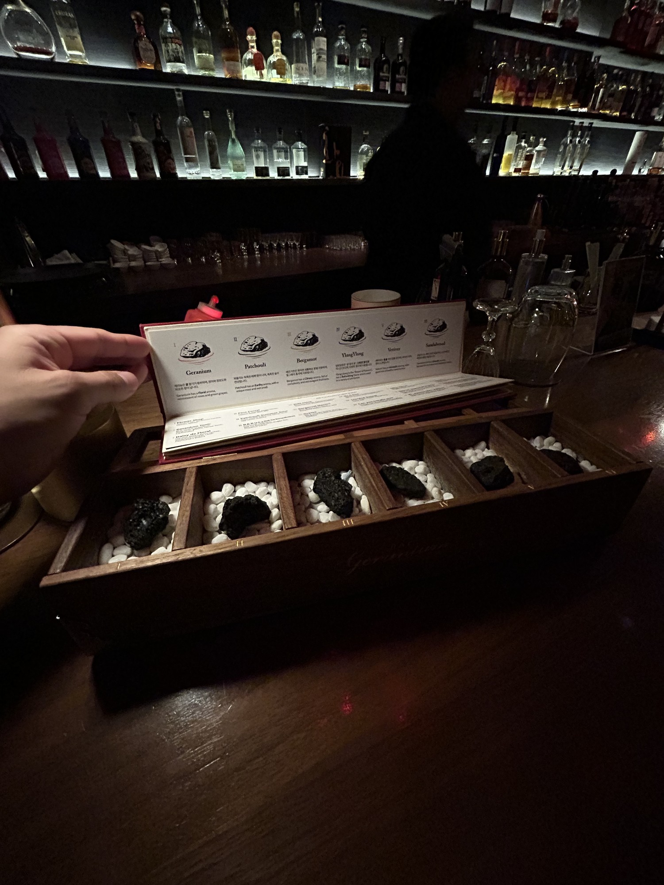
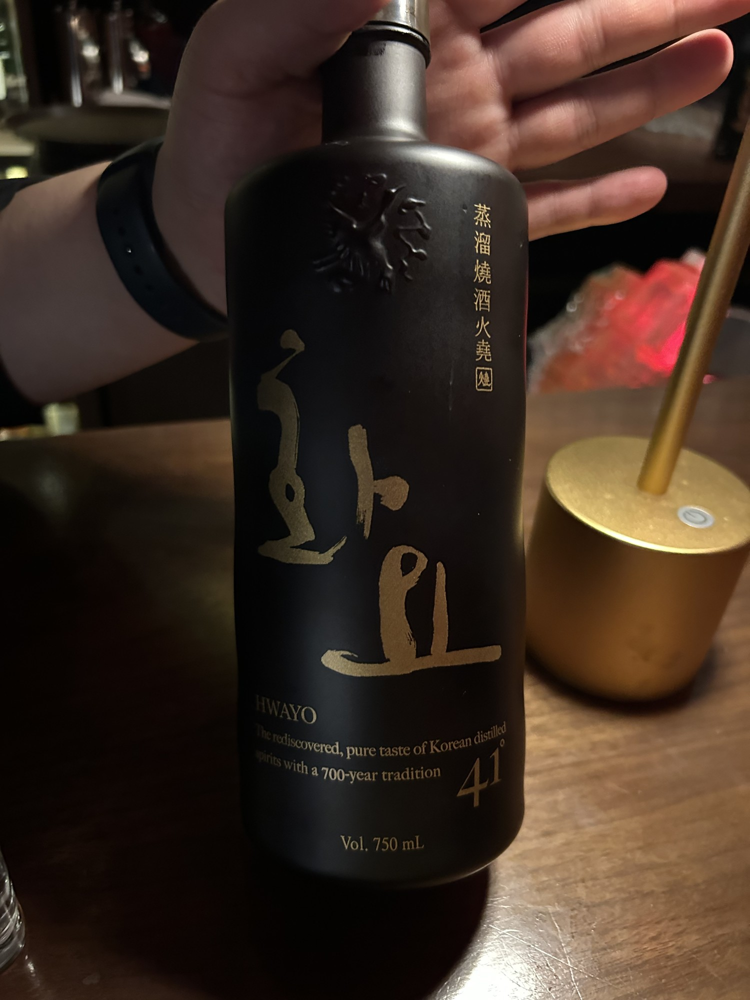

Extremely tall coupe glass. Fun homemade jelly garnish.
My thoughts
I don’t typically go for brandy, but this drink stood out amongst the other two in the Bergamot category (read “The Space”).
Very citrusy and sweet on the nose. A nice light sip, with an enjoyable, delicate foam head, reminiscent of fresh juice. I love yuzu in a drink; I think it’s my favorite cocktail citrus. The brandy provided a roundness that made this cocktail quite enjoyable.
The Space
Bar Geranium provides a cocktail experience like no other, placing scent at the forefront of your experience. You are presented with 6 rocks, all with a unique scent. Sniff them all, and pick your favorite. Each rock has 3 corresponding cocktails that incorporate your selected scent.
As someone who really cares about scent when it comes to cocktails, I love that Bar Geranium takes what is sometimes overlooked and makes it their whole identity. With so many different aroma techniques to add that flavor to your cocktail, you feel like you’re inside a perfumery.
But in no means is this a glitzy bar. Incredibly dark, wooden bar top, and a giant rock on the ceiling.

Extras
It was a slow night at the bar, and I was lucky enough to chat with the head bartender of Bar Geranium. At one point, soju came up, and he showed me a bottle which happened to be one of the ingredients in the Changwon Express at Bar Cham.
I expressed my fondness for soju (the one in the green bottle), which he mentioned is okay, but that this Hwayo is the “real” soju. A premium soju, if you will, coming in at 41% ABV, a much higher mark than the roughly 14% from the green bottles.
He gave me a shot, and it blew my socks off. A completely different stratosphere to Jinro; it’s quite rude to even compare them. Kind of like street tacos vs. Taco Bell. One is clearly superior, but let me enjoy my Gordita Crunch in peace, please.
Definitely a spirit I need to add to the collection.

My Verdict
7.8 / 10Taste
9.3 / 10Atmosphere
Taste reflects what I drank. Atmosphere reflects the bar experience.